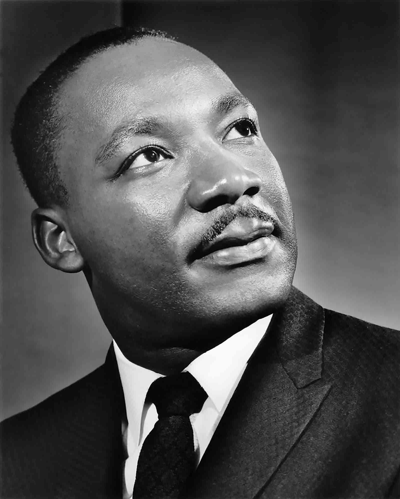

Martin Luther King Jr.

This is a photo of Martin Luther King Jr.
This is a photo of Martin Luther King Jr.
1929 - Jan. 15: Michael King is born in Atlanta. His father changes the boy’s name, as well as his own, to Martin Luther King several years later.
1944 - Sept. 20: King enrolls at Morehouse College after passing the entrance exam at age 15.
1929 - Aug. 6: The Atlanta Constitution publishes a letter to the editor from King supporting minority rights.
1948 - Feb. 25: King is ordained and becomes assistant pastor at Ebenezer Baptist Church in Atlanta, his father’s church. June 8: King graduates from Morehouse College with bachelor’s degree in sociology. Sept. 14: King enters Crozer Theological Seminary in Chester, Pa.
1951 - May 8: King graduates from Crozer with bachelor of divinity degree. He delivers valedictory address. Sept. 13: King begins graduate studies in systematic theology at Boston University’s School of Theology.
1952 - January: King meets Coretta Scott in Boston.
1953 - June 18: King and Coretta Scott are married near Marion, Ala. King’s father officiates at the service.
If you want to learn more, go to his
Wikipedia